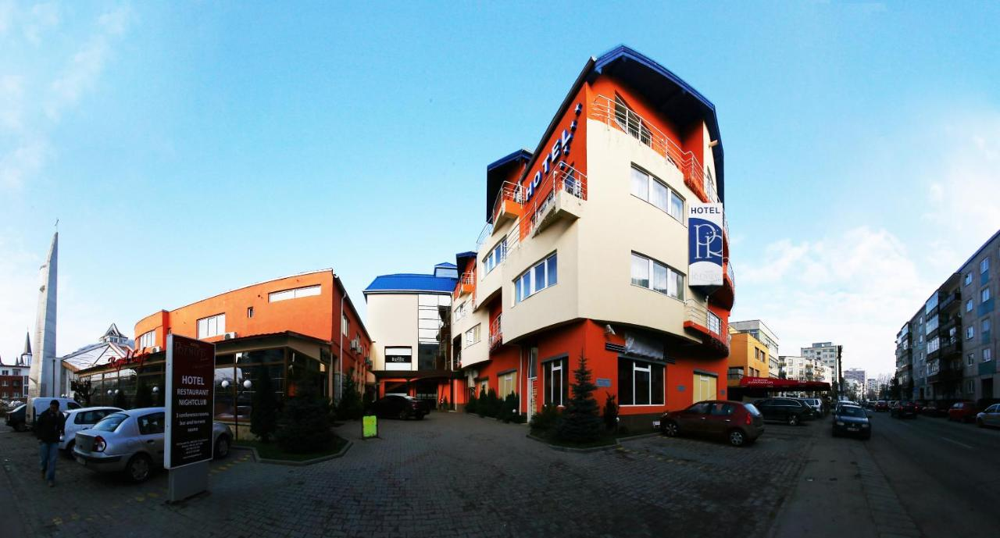

Utazás 2022
Helyszínek
Szállás
Premier Hotel
Vélemény
Az első nap nagyrészt utazásból állt,viszont így is sok emlékművet sikerült megnéznünk
A napról
 Először megálltunk Nagyszalontán a Csonka toronynál. Egy idegenvezető hölgy volt segítségünkre és egyben ő mutatta be a vár mind a négy emeletét. Sok sok érdekes dolgot lehetett megtudni Arany Jánosról például hogy hoyg élt, mi volt a foglalkozása, milyen emlékek maradtak fennt utána.
Először megálltunk Nagyszalontán a Csonka toronynál. Egy idegenvezető hölgy volt segítségünkre és egyben ő mutatta be a vár mind a négy emeletét. Sok sok érdekes dolgot lehetett megtudni Arany Jánosról például hogy hoyg élt, mi volt a foglalkozása, milyen emlékek maradtak fennt utána.
 Ezutan megnéztük a Szent Mihály templomot,ami egy nagyon kellemes és egyben esztétikus hatást produkált. Mindenki sok-sok képet készített és élvezte a látogatást.
Ezutan megnéztük a Szent Mihály templomot,ami egy nagyon kellemes és egyben esztétikus hatást produkált. Mindenki sok-sok képet készített és élvezte a látogatást.
Utolsó feladatként azt kaptuk, hogy járjunk körbe egy kicsit a városban, menjünk el mindenféle helyre, boltba, ki ahova akart.
A programok végeztével elmentünk a Premium Hotelbe ahol mindenki kiválaszthatta hogy kivel/kikkel alszik. Mindenki megkapta a szobáját, és elment aludni.